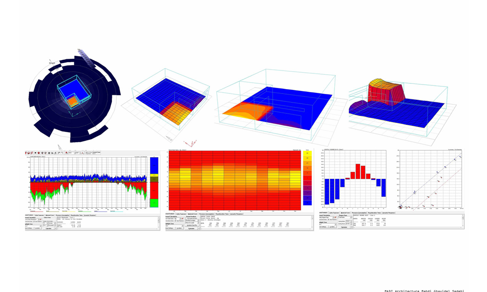

Masouleh residential/ World architecture community awards/.
Masouleh is a sustainable village located in the foothills of the mountain with unique climatic design strategies.All the houses in Masouleh face the sun and have been oriented For maximum utilization of solar energy. Moreover, Masouleh has been built like a set of steep stairs architecture-wise because of the special mountainous conditions.In other words, roof of every house would serve as the yard of the upper house and the walls overlap.One of the sustainable strategies that are used for this cold climate is sinking building into the earth, to be more exact into the soil (traditional sustainable strategy in Iran).This strategy helps to build to keep its heating energy and has less connection to the outer environment. Because of the fact that soil keeps building warm in cold weather and cool in hot weather (because has no direct connection to direct sunlight). in this project the public space of the building is sunk to the soil mountain it decreases dramatically the losing of heating So it does not need extra energy to warm with fossil fuel..